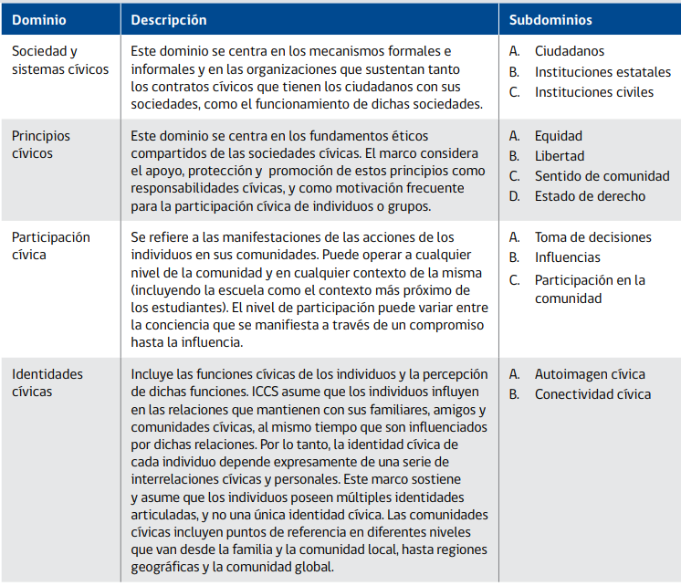

2.2 Participación politica, habilidades para la ciudadanía y conocimiento civico
Antes de definir habilidades políticas, es necesario hacer una sucinta definición de lo político, en la cual se enmarca la concepción de habilidades políticas. Al definir política desde los diccionarios es posible encontrar diferencias sustantivas en torno al rol del ciudadano en ellas. Por ejemplo, la política es definida en el diccionario de la universidad de Oxford (2020) como “la ciencia que trata de la organización de las sociedades humanas o actividades de los que gobiernan o aspiran a gobernar”, el uso dado al termino política en este artículo es más acorde con una acepción propuesta por la Real Academia Española, a saber, “Actividad del ciudadano cuando interviene en los asuntos públicos con su opinión, con su voto, o de cualquier otro modo” (RAE 2014). Esta última definición, es conveniente puesto que posee el sentido democrático y no tecnicista de la política, sentido que es coherente con los tratados internacionales de la ONU, como con distintas definiciones académicas de política. Por ejemplo, desde la perspectiva de Arendt (2009), Lechner (1984) o Mouffe (1999), la politica es una actividad de realización humana, que se establece en base a la discusión y resolución de las diferencias que son propias en las sociedades. Considerando lo anterior, las habilidades para la política serian equivalente de capacidades que son necesarias para la discusión ciudadana y la participación en la resolución de las disputas del terreno público. Por ello, habilidades como comprender, analizar, interpretar y argumentar son consideradas de hecho como habilidades necesarias para la participación política, por parte de distintos investigadores.
Actualmente las habilidades para la vida política son un constructo muy estudiado desde distintas disciplinas como las ciencias políticas, la psicología, la sociología, entre otras. Existen varias formas de medir las habilidades políticas en adultos, que implican diferentes concepciones sobre el concepto, aunque todas suponen la posibilidad de capacidades diferenciadas para ejercer la participación ciudadana. Una manera común de medirlo es resumir el concepto a conocimiento político factual, es decir, conocimiento sobre quienes poseen actualmente cargos políticos de relevancia o conocimiento sobre las leyes y el derecho actual (Petričević and Stockemer 2020; van Erkel and Van Aelst 2020). Otro modo de medir las habilidades políticas es incorporando otras dimensiones, comúnmente cognitivas, que se relacionan con la capacidad de evaluar noticias, candidatos o realización de compromisos políticos (Mondak 2020; Duval and Pétry 2018). Desde el punto de vista de este artículo, es fundamental incorporar ambas dimensiones, por lo cual consideramos pertinente definir las habilidades cívicas como un conjunto de conocimientos facticos y la capacidad cognitiva de aplicar dichos conocimientos en distintas situaciones de la vida política.
Dentro de los estudios de las habilidades políticas, enmarcados en los estudios de socialización escolar, nace la propuesta de medir dichas habilidades a partir de una prueba estandarizada, otorgando mayo validez y fiabilidad a su medición. Esta, es la prueba de conocimiento y habilidades para la vida cívica y ciudadana, presente en el estudio internacional ICCS. Esta prueba, considera dos dimensiones en las habilidades ciudadanas, el dominio de contenido, es decir el conocimiento factico de los principios del sistema democrático, y el dominio cognitivo, comprendido como el conjunto de habilidades necesarias para la vida ciudadana, como la comprensión, el análisis y la evaluación (Schulz et al. 2011). Los conocimientos evaluados en esta prueba pueden apreciarse en la siguiente tabla.
 En torno a la evidencia levantada sobre el conocimiento cívico de estudiantes medido desde la propuesta de la ICCS, se han señalado fundamentalmente dos conclusiones: primero, el conocimiento cívico posee efectos positivos en valores y conductas democráticas, y segundo, el conocimiento cívico está influido por factores contextuales como la desigualdad social y la socialización escolar.
Debido a sus efectos positivos, el conocimiento cívico y ciudadano es actualmente promovido por diversos agentes a nivel académico, Estatal e internacional. Este conocimiento es sumamente relevante si se considera sus efectos positivos sobre la intención de participación (Miranda, Castillo, and Sandoval-Hernandez 2015), en un contexto de apatía política y baja participación de estratos bajos y jóvenes (Janmaat 2013; Contreras and Navia 2013). Igualmente, en el contexto de los nuevos movimientos sociales que buscan reivindicar los derechos de distintos grupos tradicionalmente discriminados, el conocimiento cívico ha demostrado estar relacionado con el respeto a los derechos humanos de estos grupos (Miranda, Castillo, and Cumsille 2018; Caro and Schulz 2012). También, el tener más conocimiento cívico se relaciona con estar en desacuerdo con la corrupción y con la valoración positiva de la democracia como sistema representativo en contraposición a las dictaduras, lo cual, según Hastedt (2016), es fundamental en un contexto de resurgimiento de los gobiernos autoritarios. En suma, el conocimiento cívico puede ayudar a las personas a incorporar los principios democráticos de los derechos humanos.
2.2.2 Manejo del lenguaje y Comprensión lectora
El lenguaje ha sido ampliamente conceptualizado a lo largo del pensamiento humano. Aristoteles, concede al lenguaje un rol elemental cuando lo concibe como la herramienta propia del zoon politikon, ya que el lenguaje y la comunicación permite a los humanos discutir y ponerse de acuerdo. Un rol semejante le otorga al lenguaje el filosofó precursor del romanticismo Herder, cuando plantea que esta es la habilidad que da coherencia a la actividad humana, siendo una herramienta que le permite comprender la realidad y reflexionar sobre ella, a partir de conceptualizarla. Desde ambos filósofos, y desde varios otros (ej. Echeverría 2011; García 2013), el lenguaje es aquello que nos permite relacionarnos como humanos, usar la razón y poder discutir sobre nuestros asuntos para coexistir. Ahora bien, aunque es cierto que el lenguaje es algo propio y por ende transversal en el género humano, existe contundente evidencia para señalar que el manejo del lenguaje es diferenciado según grupos sociales.
Al respecto, el sociólogo de la línea de la reproducción cultural, Basil Berstein, realizo durante algunas décadas un amplio conjunto de experimentos e investigaciones para evaluar el uso del lenguaje en distintas clases sociales. En ellas, Bernstein (1985) concluye que los grupos económicamente acomodados y con mayores estudios, heredan a sus hijos un código sociolingüístico elaborado del lenguaje, que les permite hacer abstracciones y pensamientos que se separan de la situación contextual en la que se encuentran. Por el contrario, los jóvenes de los barrios obreros heredan gracias al proceso de socialización un código restringido el cual esta tendencialmente limitado a referencias contextuales y a situaciones vividas. Cabe destacar, como lo hace Bernstein (1988), que los grupos de clases medias y altas también poseen el Código restringido, pero poseen además el código elaborado el cual utilizan en situaciones desafiantes. En suma, puede evidenciarse una desigualdad sociocultural en el manejo del lenguaje que genera capacidades diferenciadas de referenciar ideas fuera de lo vivido cotidianamente, diferencias las cuales explican según el autor la desigualdad de rendimiento académico entre clases sociales, ya que el conocimiento académico se sustenta en el código elaborado, es decir, utiliza ideas fuera de la cotidianidad vivida. En suma, podemos definir al lenguaje como la base de la reflexión y la acción basada en ideas abstractas, el cual puede presentar desarrollos diferenciados socioculturalmente, lo que puede generar desigualdades en ámbitos que requieran de un lenguaje abstracto, como lo puede ser la academia o, desde esta propuesta, la política.
Respecto al manejo del lenguaje, que como vimos es socialmente desigual, y la prueba de conocimiento cívico se han dicho pocas cosas. Entre ellas destaca el aporte de T. Zhang, Torney-Purta, and Mislevy (2015), quien realiza una critica al instrumento de medición de conocimiento cívico en tanto este posee un lenguaje muy complejo que influye en las respuestas de los estudiantes. Si bien es una critica de validez a considerar, no podemos obviar el hecho de que la política entera esta construida sobre un lenguaje complejo, por lo tanto, el no comprender la prueba por no entender los términos o ser capas de comprender los enunciados planteados, es signo también de no ser capas de comprender esos enunciados fuera del contexto de la prueba. Por ello, complementando lo planteado por T. Zhang, Torney-Purta, and Mislevy (2015) podríamos decir que estas dificultades en el lenguaje de la prueba probablemente son aun mayores para los estudiantes socializados en familias con bajo nivel educativo y menor acceso a recursos como libros.
Un indicador útil para medir la capacidad de los estudiantes de entender distintos discursos y ser capases de comprender ideas abstractas, así como analizarlas, interpretarlas y evaluarlas, es la comprensión lectora. La comprensión lectora implica la medición de la capacidad del estudiante, no solo de decodificar el texto, sino de comprender y analizar la relación entre las distintas partes de los textos, para posteriormente realizar ejercicios mentales más complejos como los son la síntesis, la interpretación la evaluación (ACE 2018b). Si bien otras habilidades del manejo del lenguaje como la comprensión auditiva y la expresión escrita u oral son habilidades fundamentales para la vida política, poseen la dificultad de que es sumamente difícil medirlas de modo estandarizado. No obstante, no incorporarlas no es tan problemático considerando la amplia relación que hay entre comprender la lectura y estas otras habilidades. Para trabajar con esta variable se utilizará la prueba SIMCE, la cual, justamente busca medir los logros de aprendizaje de los estudiantes chilenos en torno a las habilidades lectoras.
Según Barahona U (2014) existe un consenso en que los factores asociados al desempeño académico en lenguaje pueden tener su origen en dos grandes ámbitos: en los determinantes personales y en los determinantes sociales. Así, una de las variables fundamentales para explicar el rendimiento en lenguaje es el nivel socioeconómico según se plantea en el informe Coleman (Marqués 2016). No obstante, no todo es reproducción social, pues como plantean Lara, Mizala, and Repetto (2010), las practicas docentes pueden tener un efecto positivo, por ejemplo, discutir la materia en clases es positivo para el rendimiento en comprensión lectora. Además de la participación en clases, el interés sobre la materia es un factor fundamental para su aprendizaje (Lozano, García-Cueto, and Gallo 2000).